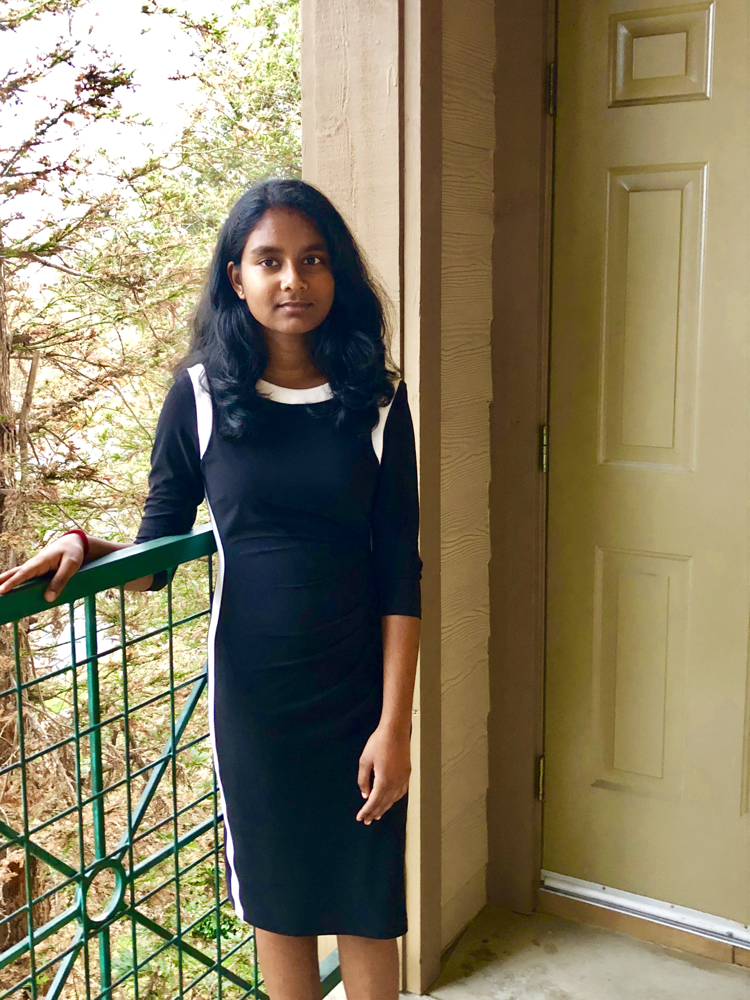

Currently, I am a sophomore at Dublin High School. But, after I graduate, I would like to pursue a career in computer science engineering. To achieve this goal, I hope to gain exposure and develop a passion in this field throughout my four years of high school. I plan to continue to take engineering electives, such as Computer Science Principles and Principles of Engineering, that will help me build and strengthen the skills necessary to be successful in this field. I also intent to attend more guest speaker events and field trips in the future so I can learn more about this career. Although I have already taken an engineering class, I am excited to continue and expand my learning. I believe this career is well suited for me because I enjoy problem solving. Engineering also involves the practical application of math and science in the real world, which greatly interests me.
In order to gain more experience to the world of computer science, I had joined a CyberPatriot team last year. In my opinion, simply having the courage to try something new and being open to new ideas was an accomplishment. My team and I were able to attend competitions last year, but we were not able to qualify for the Mayor’s Cup, a Bay Area cybersecurity competition. Although there were a few things my team and I needed to improve on, I was proud of us for being able to attend the competition and do our best. This year, my team and I worked harder and we attended the first two competitions of the year. To our delight, we were placed in the Platinum Tier, which is the highest level of qualifiers for the next round! Additionally, this year I was able to join the Dublin High School Robotics Club. My involvement in this club has taught me a lot about building and the design process and I hope to continue and learn more!
My experience throughout my schooling has taught me many valuable lessons. First, I learned how to be patient with myself when taking a difficult class. Although academics are usually my strength, I often get frustrated when I do not understand something. This happened a lot during my precalculus class over the summer. Overtime, I learned to be patient with myself and give myself time to understand the material. Furthermore, after entering sophomore year, I was able to grasp how to effectively manage all my classes and extracurriculars. Unlike freshman year, I had a lot more on my plate and had to concentrate on balancing everything. I learned to efficiently manage my time and stay focused.
Lastly, I believe that I am a reliable and responsible person. As the Treasurer of Stitch in Time, a volunteer club that donates handmade crocheted goods, I learned the importance of organization and responsibility, especially when it comes to dealing with money. Additionally, being on a CyberPatriot team for two years that showed me the importance of teamwork and cooperation. I believe that I am a team player and that my cooperative nature has allowed me to work well with others. I feel that I can be trusted with a job and that I will always try to perform my best. Furthermore, I take pleasure in being around people and interacting with them, especially those I do not know a lot about.
All in all, thank you for taking your time to read this section of my portfolio. I encourage you to explore the rest of my portfolio. Thank you!